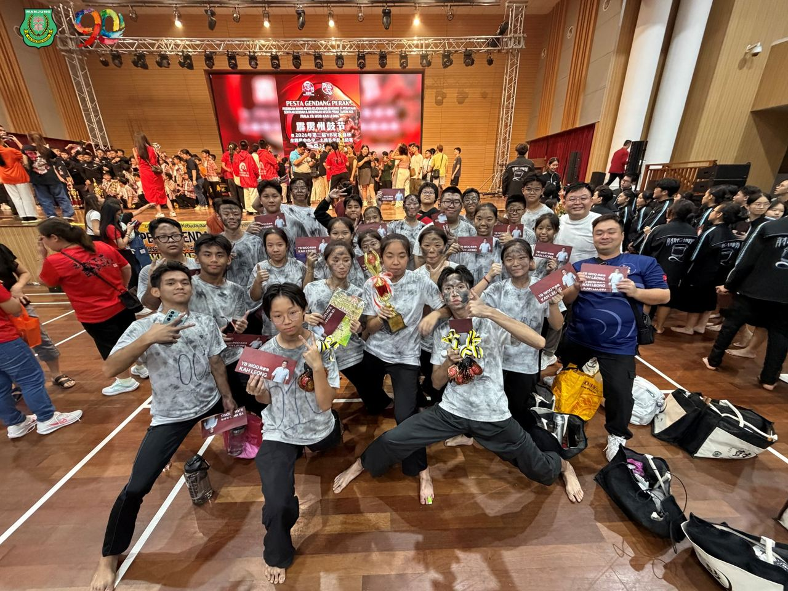
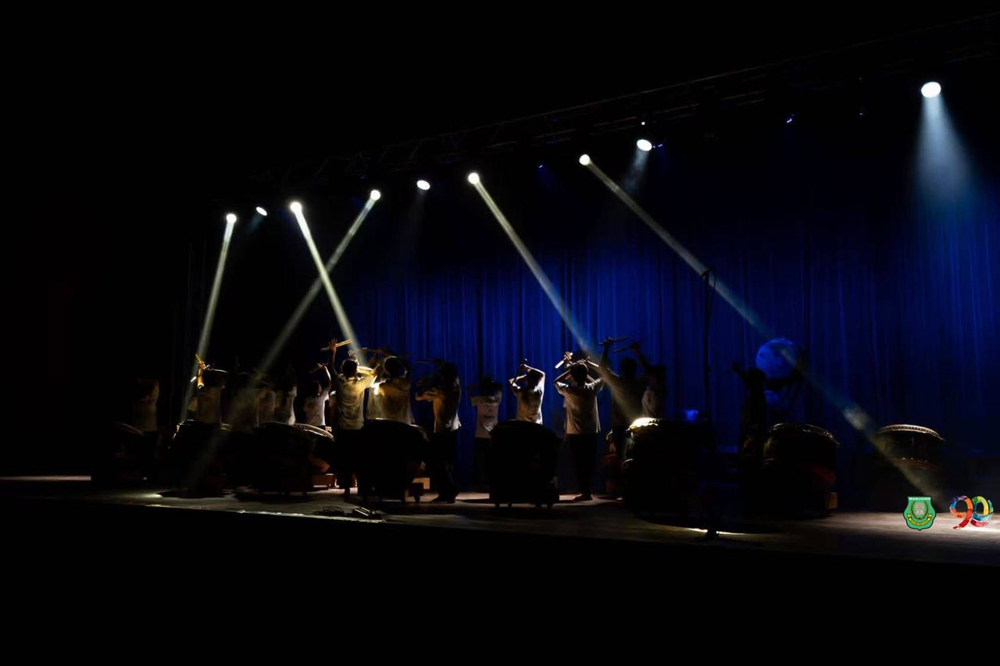
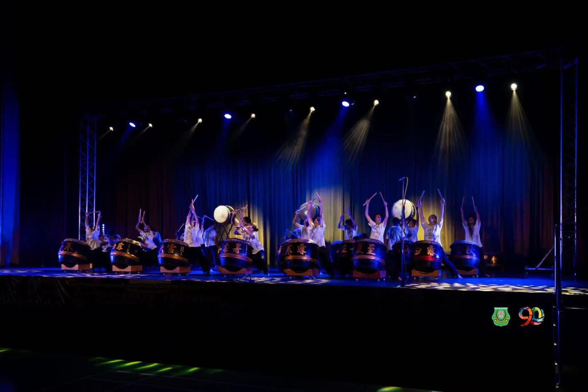
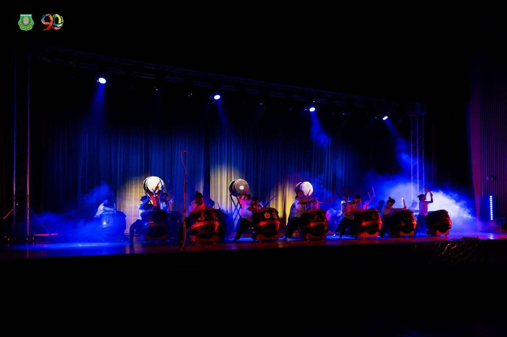
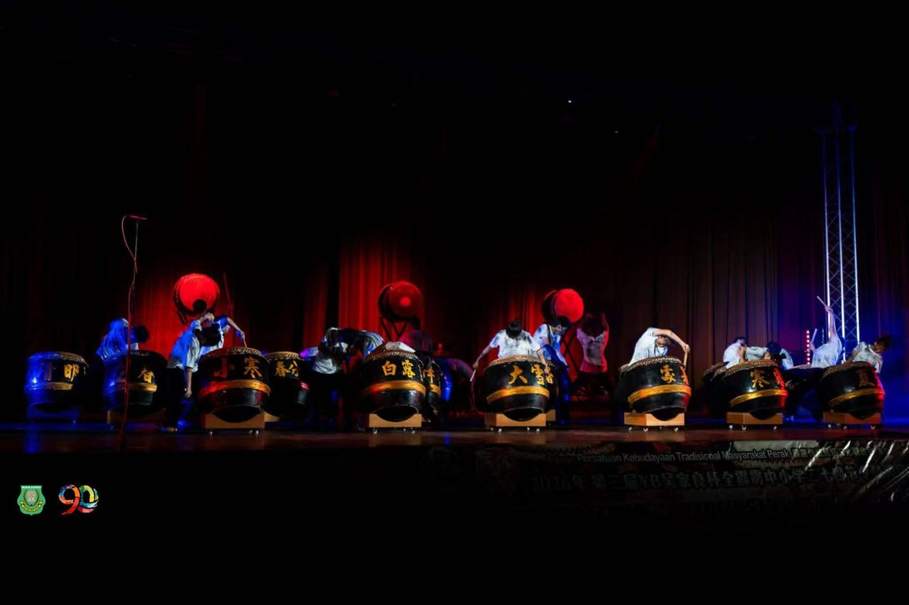
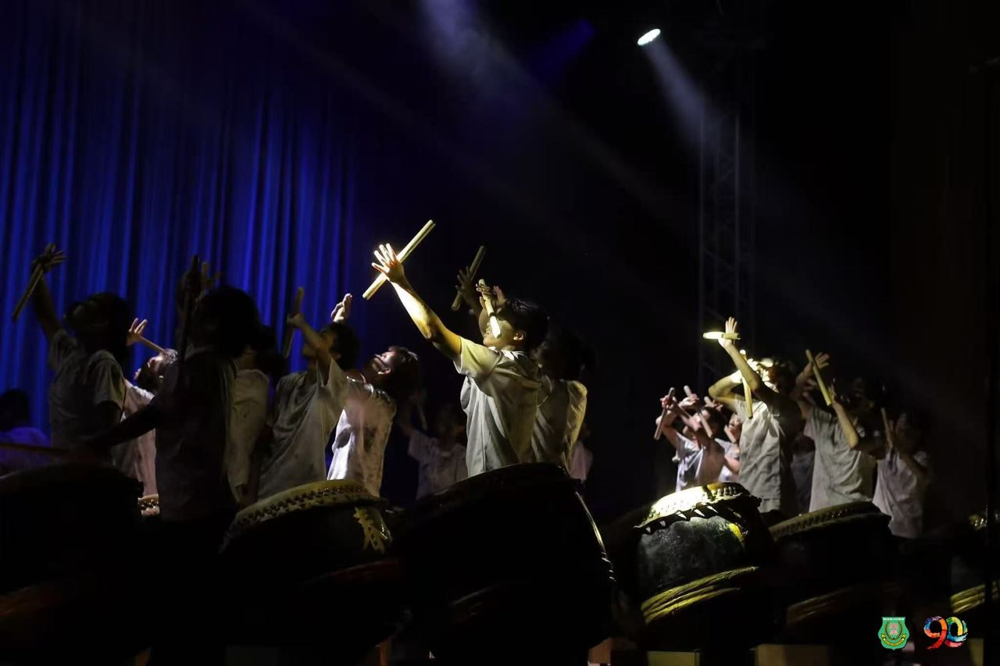
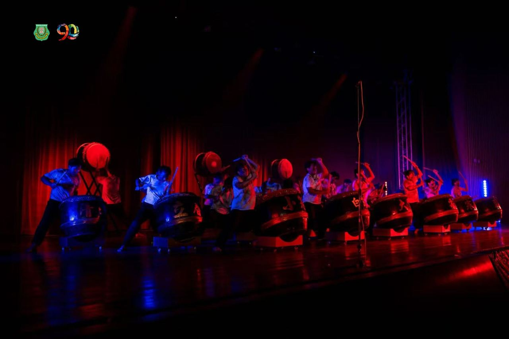
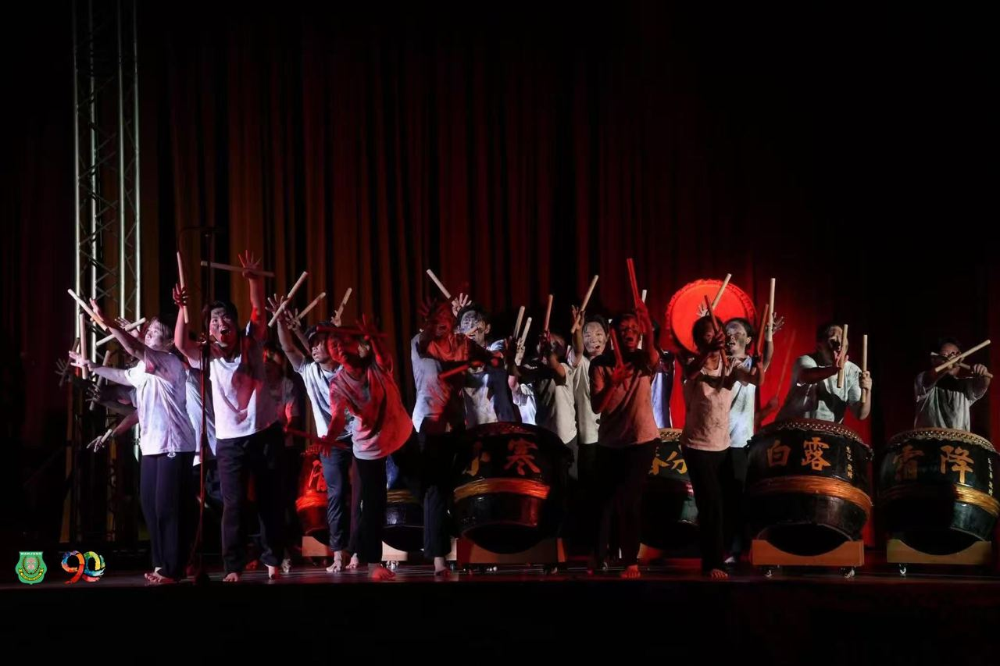

🥁 狂澜尽处见曙光🥁
🥁 狂澜尽处见曙光🥁
南华独中廿四节令鼓队
⭐总决赛斩获佳作奖⭐
💡在刚刚落幕的第三届YB吴家良杯中小学邀请赛总决赛中，南华独中廿四节令鼓队凭着震撼人心的剧目《猪仔船》，在强手如林的激烈角逐中脱颖而出，荣获总决赛佳作奖（第四名）！🏅
🚢 剧情震撼：重温华工南来的血泪史
《猪仔船》取材自早期华工南来时期的真实历史。鼓手们用密集的鼓点与张力十足的肢体语言，重现了先辈在风浪、饥饿、鞭打中挣扎求生的艰难历程。
剧目中最具匠心的是唯一一段福州话台词：
“离乡背井，拜别爹娘，海上漂泊，生死未卜。”
苍凉的本土乡音直击人心，不仅彰显了实兆远特有的文化根基，更将先辈在绝境中不屈不挠、誓要活出一条血路的意志展现得淋漓尽致！
😭 泪洒舞台：用尽全力的完美蜕变
据带队老师透露，在表演尾声“阳光破茧而出”的瞬间，台上的鼓手们早已热泪盈眶。历经无数次高强度的闭门苦练，面对这最后一次的全力一搏，队员们将情感完全融入作品。正如那艘在黑暗中破浪前行的猪仔船，唯有坚持过后的阳光，才最动人心魄。
👏 致敬幕后推手
坚实的成绩离不开幕后团队的默默奉献！
指导教练：钟建博教练
带队老师：黄俊锦老师、潘柔榛老师
从黑暗到光明，从默默练习到闪耀决赛，让我们为这群把汗水留在鼓面、把历史带上舞台的南华鼓手们送上最热烈的掌声！鼓队威武！🔥💪
#南华独中 #SekolahTinggiNanHwa #廿四节令鼓 #吴家良杯 #总决赛 #猪仔船 #福州话 #文化传承 #破浪前行 #活着就有路







